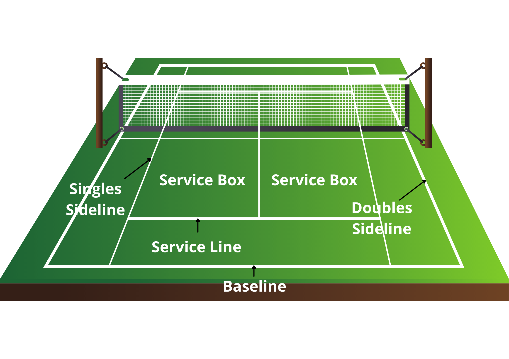
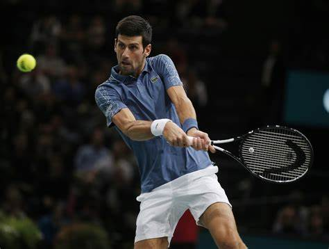

Back to Page 1
Tennis
Tennis is a popular racket sport played in many different countrties. It takes a lot of skill and effort to be good at the sport.
Many matches and tournaments are held, and an incredible amount of people come to watch and support. You can play singles, which
is played against one other player, or you can play doubles, with one other player on your team against another two players.
The top tournaments are, The Austrailian Open, French Open, Wimbledon Championships and the US open.

There are many famous tennis players in history, such as Roger Federer, Novak Djokovic, Andy Murray, Serena Williams, Venus Williams, Emma Raducanu.
These players are not the best in the world in present day, but used to be very top tennis players, who had won many Grand Slams and other tournaments.
